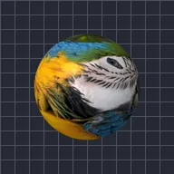

Ellipsoïde

Applique le calque autour d’une sphère que vous pouvez comprimer et aplatir.
Réglages
| Réglage | Type | Plage | Par défaut |
|---|---|---|---|
| Rotation X | Angle | De -3600° à 3600° | -15° |
| Rotation Y | Angle | De -3600° à 3600° | 0° |
| Rotation Z | Angle | De -3600° à 3600° | 0° |
| Rayon | Nombre | De 0.02 à 5 | 0.8 |
| Compression | Nombre | De 10% à 190% | 100% |
| Aplatissement | Nombre | De 5% à 100% | 100% |
| Position | Point (X, Y) | De -5000 px à 5000 px | 0 px, 0 px |
| Échelle | Nombre | De 0.05 à 10 | 1 |
| Perspective | Nombre | De 0 à 1 | 0.5 |
| Ombrage | Nombre | De 0 à 1 | 0.6 |
| Angle de la lumière | Angle | De -3600° à 3600° | 135° |
| Brillance | Nombre | De 0 à 1 | 0.3 |